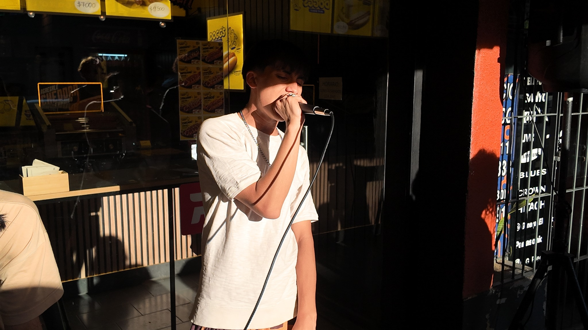
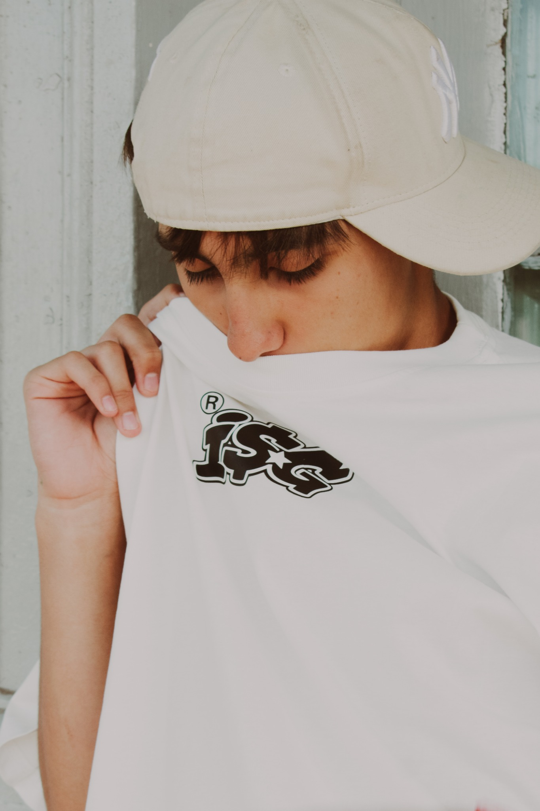
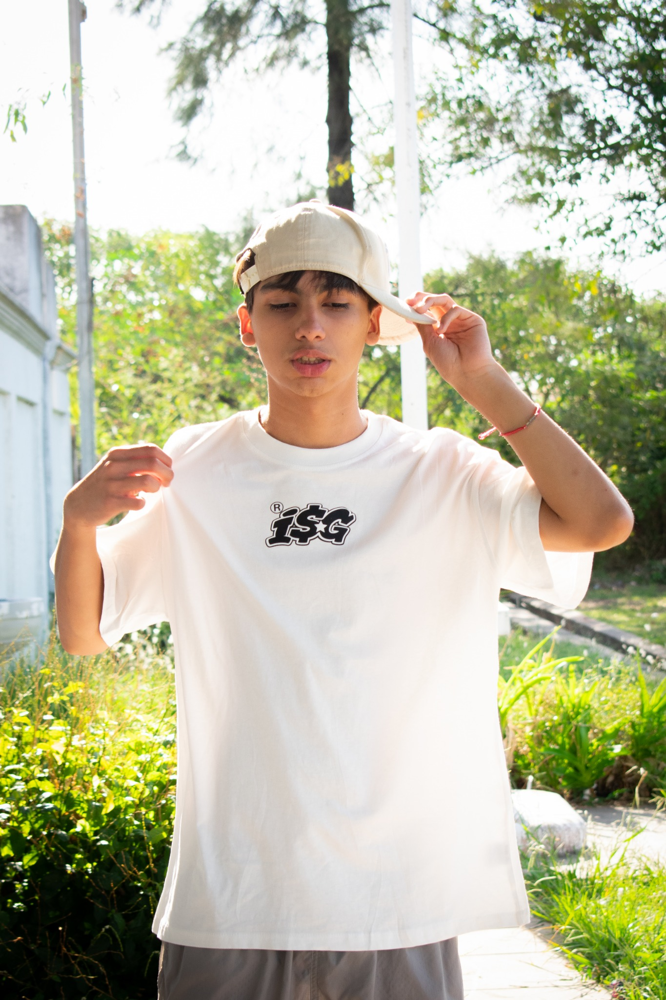
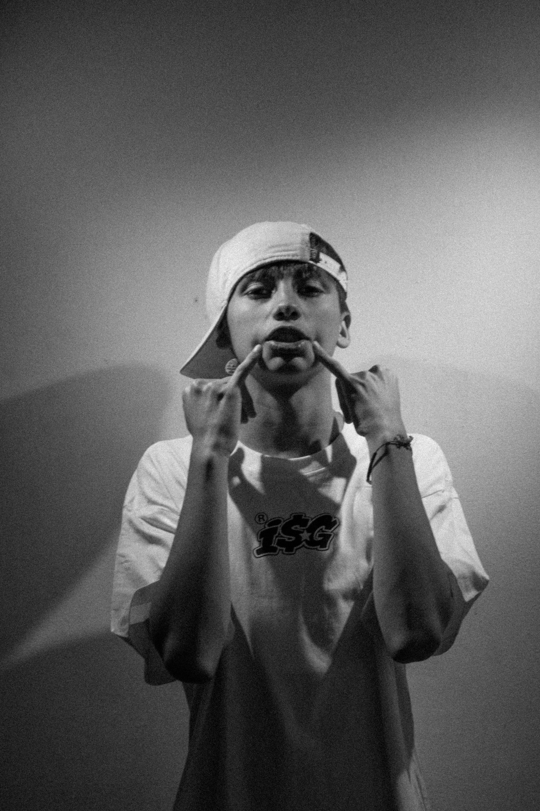
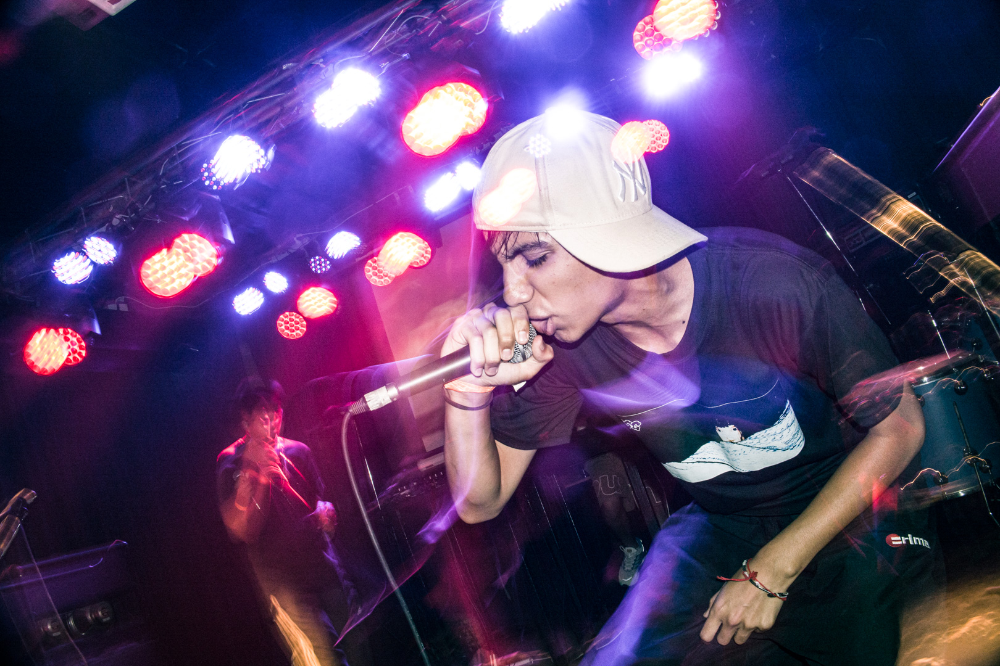
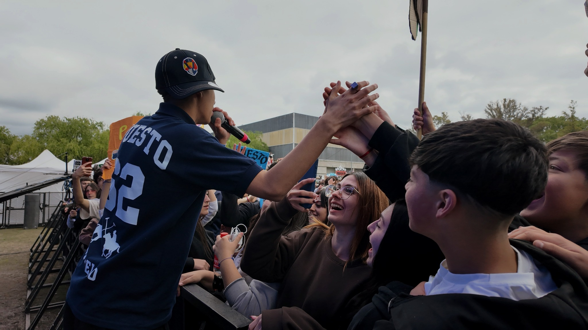
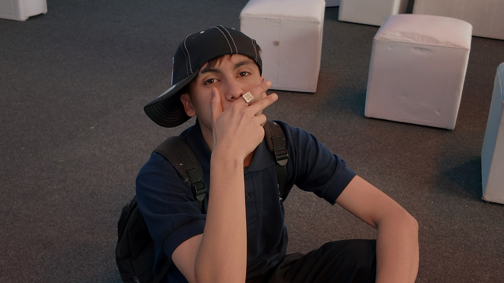
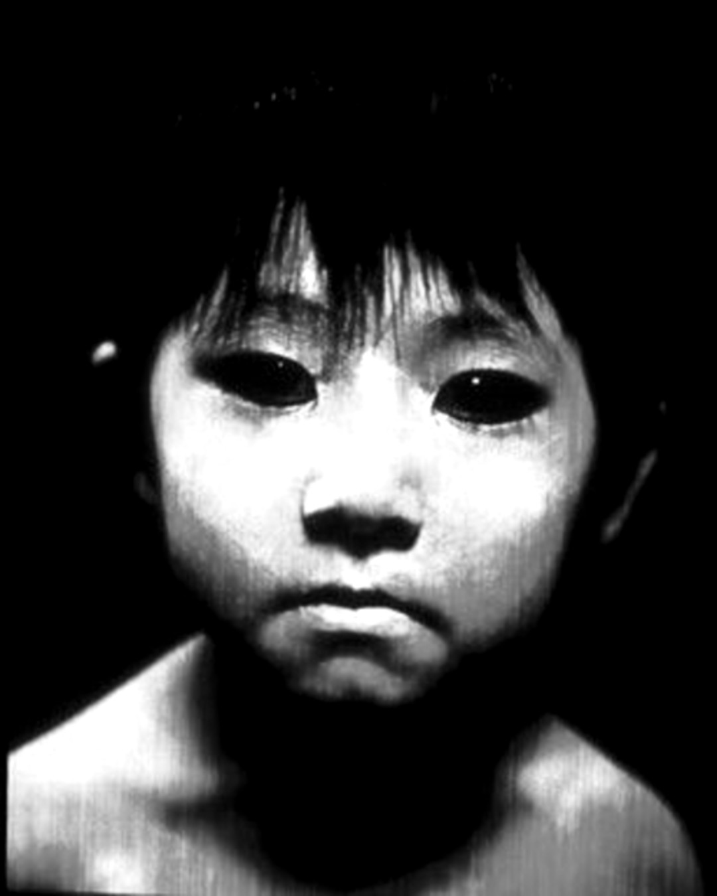

MONKEY
BLUE
TRAP · RAP · SIN FILTRO
EL ARCHIVO









REDES & MÚSICA
JU-ON+
NO TENGO TIEMPO
QUIERO CHAMPEIN
BLOODY MARY
SER COMO YO
JU-ON es un álbum conceptual: una maldición que nace de emociones negativas, rencores que no sanan y un odio guardado durante mucho tiempo. El disco expresa esa bronca y ese resentimiento, pero también muestra cómo esas mismas emociones pueden convertirse en un obstáculo para avanzar.
En el centro del proyecto aparece una contradicción: querer dejar atrás el odio mientras todavía se carga con él. JU-ON representa ese conflicto interno y el intento de soltarlo.
MONKEYBLUE INFO
MONKEYBLUE es un artista de trap de Pilar, Buenos Aires. Criado en una familia de músicos, sus raíces vienen del folklore, el rock y el flamenco, aunque comenzó su camino musical dentro del trap en 2023. Desde entonces publicó cuatro discos, destacando MAIAMA y KEIKE.
Es fundador de ICE $WIGE, colectivo y sello discográfico independiente que reúne artistas y productores y desarrolla proyectos musicales y eventos. Su propuesta se mueve entre el trap agresivo, la energía explosiva y una identidad sin filtro.